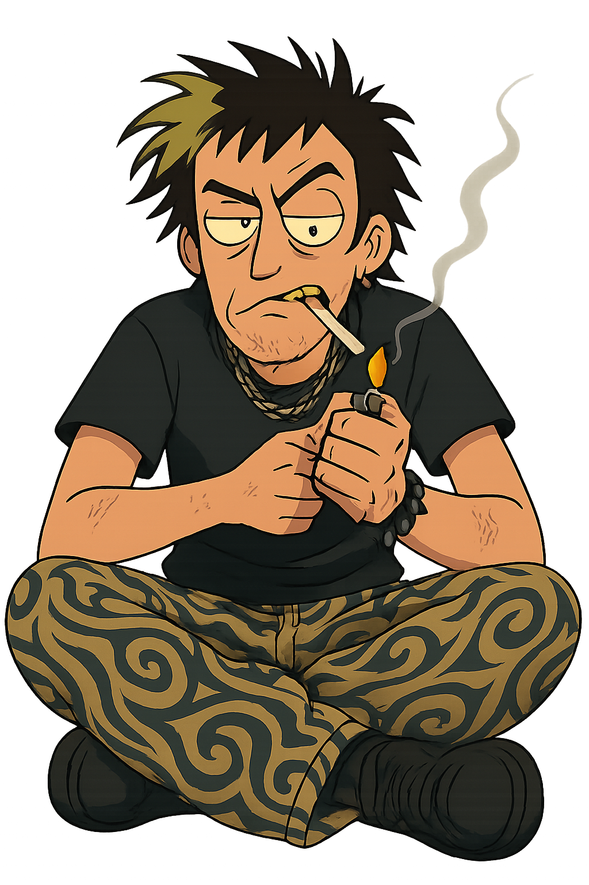

IKHSAN ARLATIN SANI
NIM: 253140707111114
Ikhsan Arlatin Sani merupakan mahasiswa yang berasal dari
SMKS Muhammadiyah 09 Jakarta. Ia memiliki ketertarikan yang tinggi
dalam dunia teknologi, khususnya di bidang Web3. Ketertarikan tersebut
menjadi salah satu alasan utama ia memilih untuk melanjutkan pendidikan
di bidang Teknologi Informasi (TI) Vokasi UB.
← Kembali
📸 Instagram